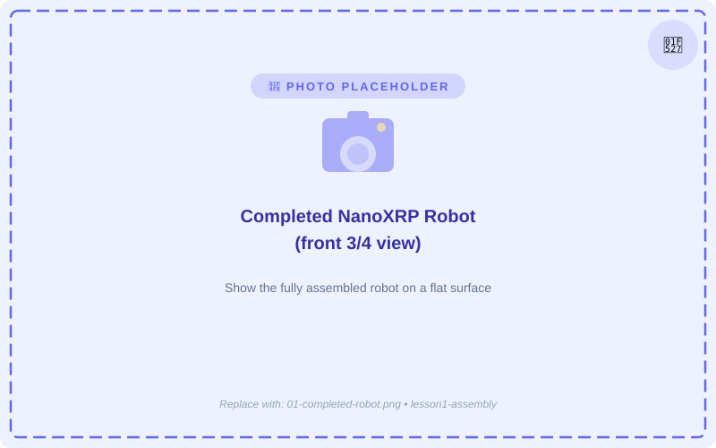
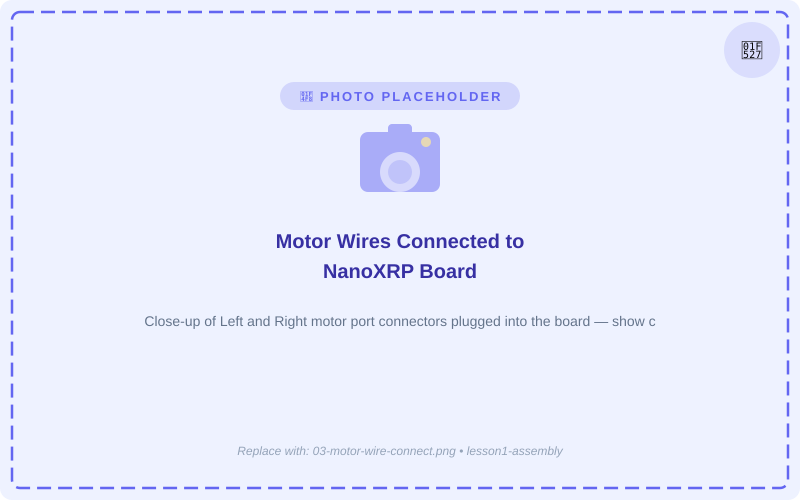
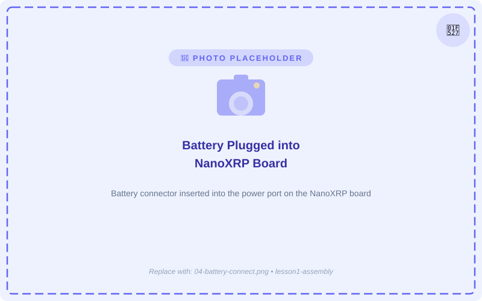
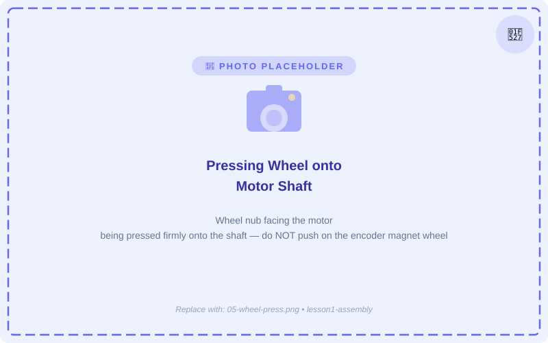
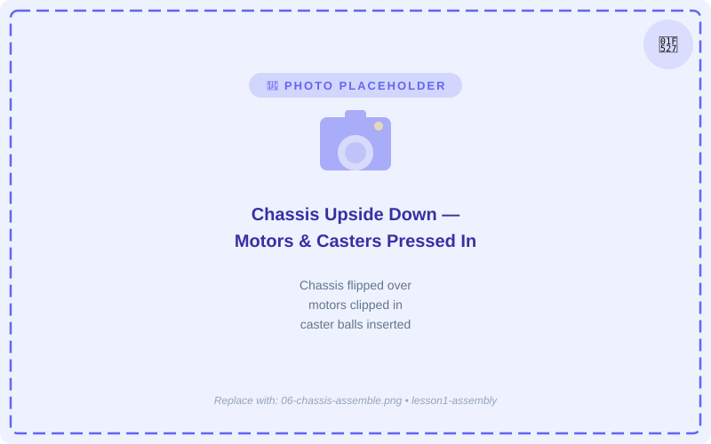
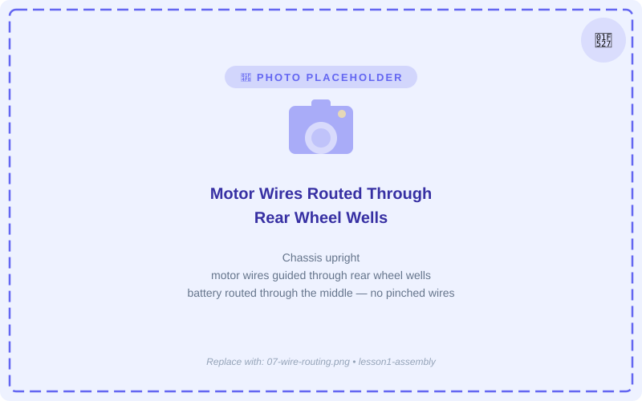
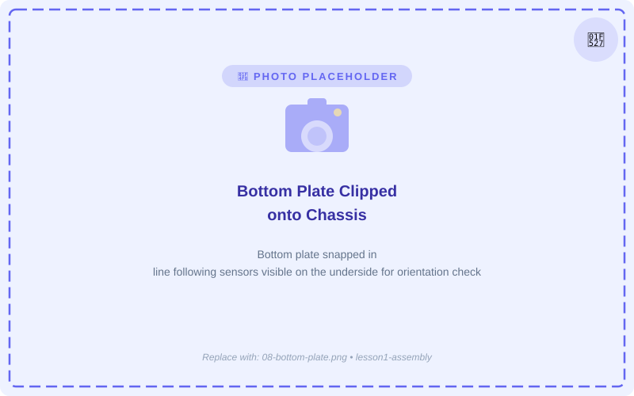
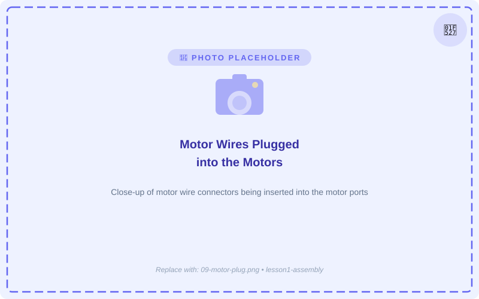
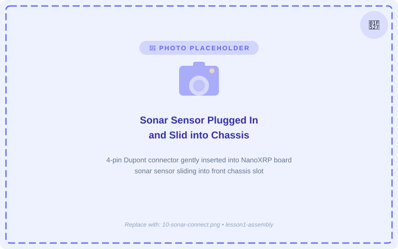
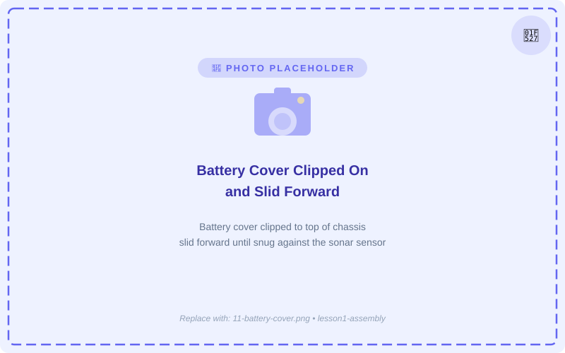

🔧 Lesson 1: Assembling the Robot
NanoXRP Robot Coding Adventures
🤖 Let's Build Your Robot!
Welcome to your first lesson! Today you're going to put together your very own NanoXRP robot. By the end, you'll have a working robot ready to program!

The NanoXRP is a small robot on wheels that you can program using a computer. It has motors, sensors, and a tiny computer brain — just like real robots used by engineers!
This lesson has 10 slides and a short quiz at the end. Take your time reading each step carefully.
🧰 What's in the Box?
Before you start building, let's make sure you have all the parts. Lay everything out on a flat surface and check each item off the list!

Plastics Checklist

Electronics Checklist
Raise your hand and ask your teacher before continuing. Don't try to build with missing pieces!
🦺 Safety First!
Building robots is awesome, but we need to be safe about it. Follow these rules every time you work with your robot.
Be extra careful with the battery
Be gentle with the wires, do not drop or damage the battery.
Handle the circuit board carefully
The controller board has tiny electronic parts. Hold it by the edges and don't touch the metal parts on the bottom.
Don't force anything
Parts should fit together easily. If something doesn't fit, stop and ask for help — don't push or break it!
Once you've reviewed the safety rules, let's start putting the robot together!
Step 1: Connect the Wires & Battery

Connect the motor wires
Grab the motor wires and the NanoXRP board. Connect the motor wires to the Left and Right motor ports. Make sure the connectors are facing the right way — plugging them in backwards can damage the pins!

Plug in the battery
Take the battery and plug it into the NanoXRP board.
The motor wire connectors only go in one way. Look carefully before pushing — forcing them in backwards can bend or break the pins.
Step 2: Attach the Wheels & Chassis

Press the wheels onto the motor shafts
The wheel nub should face the motor. You may need to press hard — that's normal! Do not push on the small encoder magnet wheel on the back of the motor.

Press the motors & casters into the chassis
Flip the chassis upside down. Press the caster balls and the motors into the chassis. Make sure the encoder ports are facing down, like in the image above.
Step 3: Route the Wires

Guide the wires into place
Flip the chassis upright. Guide the motor wires up through the rear wheel wells, and the battery through the middle of the robot. Check that no wires are pinched or caught between parts.
Gently tug each wire to make sure it moves freely. A pinched wire can cause the robot to behave oddly or stop working.
Step 4: Clip on the Bottom Plate

Clip on the bottom plate
Once the board is in place, clip it in with the bottom plate — it should snap into place. Look for the line following sensors to make sure the orientation is correct.

Plug in the motor wires
Now that the bottom plate is clipped in, plug the motor wires into the motors.
Step 5: Sonar Sensor & Battery Cover

Connect the sonar sensor
Plug the sonar sensor into the NanoXRP board. Be gentle with the 4-pin Dupont connector on the board. Once plugged in, slide the sonar sensor into the chassis.

Attach the battery cover
Clip the battery cover onto the top of the chassis and slide it forward so it is snug with the sonar sensor. Congratulations — your robot is fully assembled! 🎉
Great work! Your NanoXRP robot is built and ready to program. In the next lesson you'll connect it to your computer and write your first program!
Quick Check!
Answer these questions to complete Lesson 1. You need 3 out of 4 correct to pass!
1. What should you do if a part doesn't seem to fit during assembly?
2. What can happen if you plug a motor wire connector in backwards?
3. When pressing a wheel onto a motor shaft, which direction should the wheel nub face?
4. After clipping on the battery cover, what is the last thing you do to secure it?